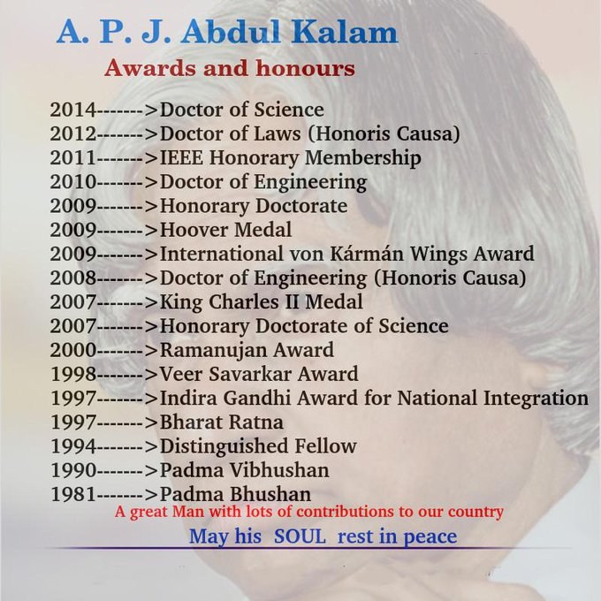
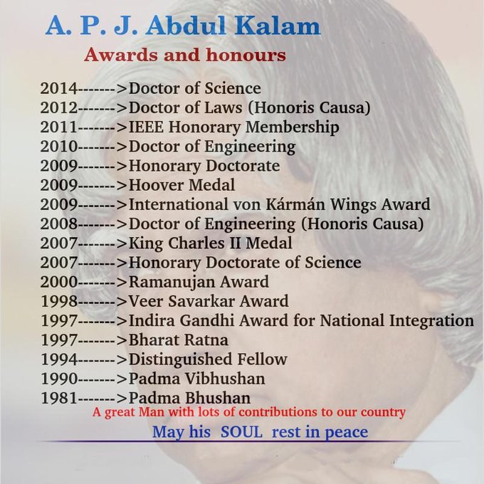

Dr. Avul Pakir Jainulabdeen Abdul Kalam (1931-2015)

Dr. A.P.J Abdul Kalam’s Remarkable List of Achievements and Awards
Dr. Avul Pakir Jainulabdeen Abdul Kalam (1931-2015)
Dr. A.P.J Abdul Kalam’s Remarkable List of Achievements and Awards
Dr. APJ Abdul Kalam was the 11th President of India, serving from 2002 to 2007. He was born on October 15, 1931, in Rameswaram, Tamil Nadu. Coming from a humble background, he rose to become one of India's most respected scientists and leaders.
Known as the "Missile Man of India" for his work on the development of ballistic missile and launch vehicle technology, Dr. Kalam played a key role in India's civilian space program and military missile development.
"Dream, dream, dream. Dreams transform into thoughts and thoughts result in action."
Dr. Kalam is an inspiration because he showed that with hard work and dedication, anyone can achieve greatness regardless of their background. Born into a poor family, he became one of India's greatest scientists and a beloved President.
His love for teaching and his dedication to inspiring young minds made him special. Even as President, he always made time for students and encouraged them to dream big. His simplicity, humility, and commitment to making India a developed nation continue to inspire millions.